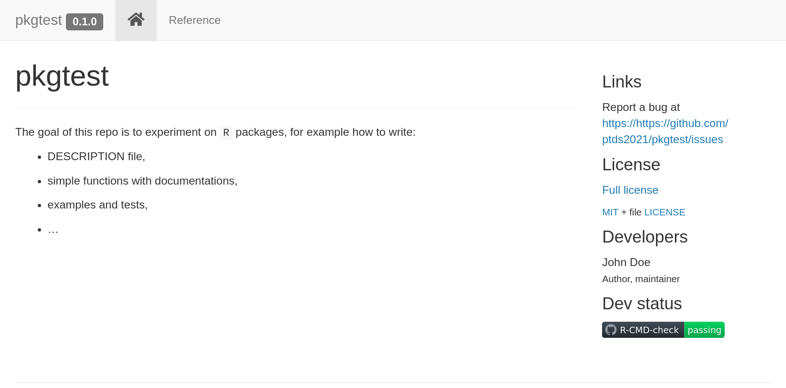
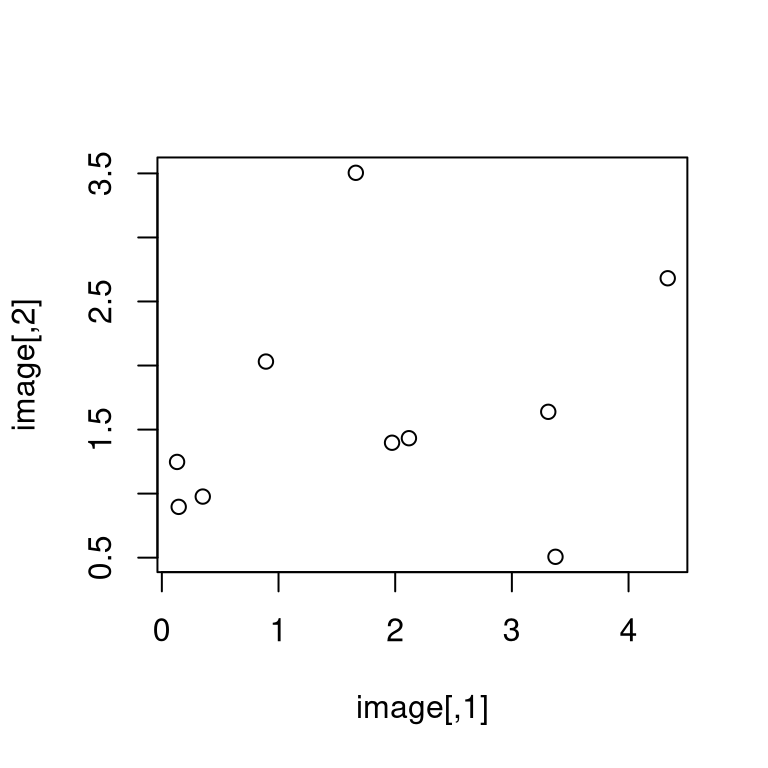
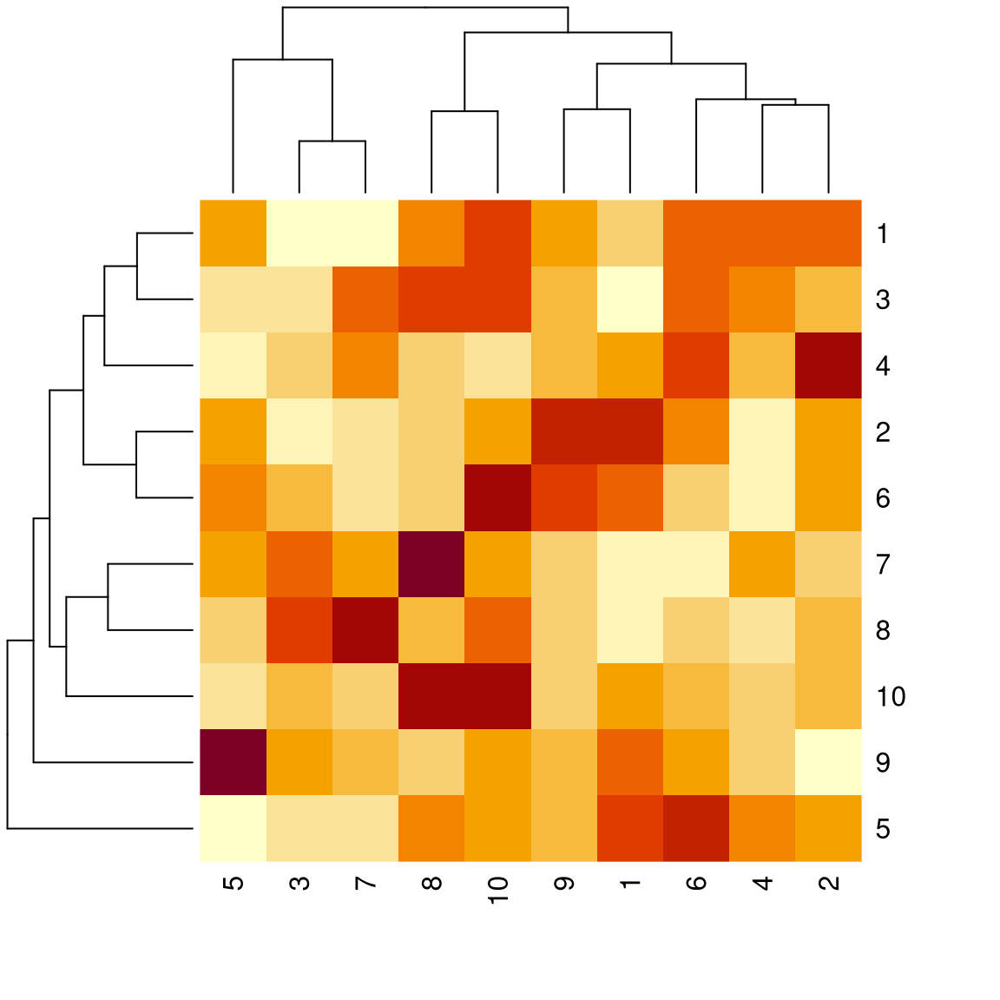
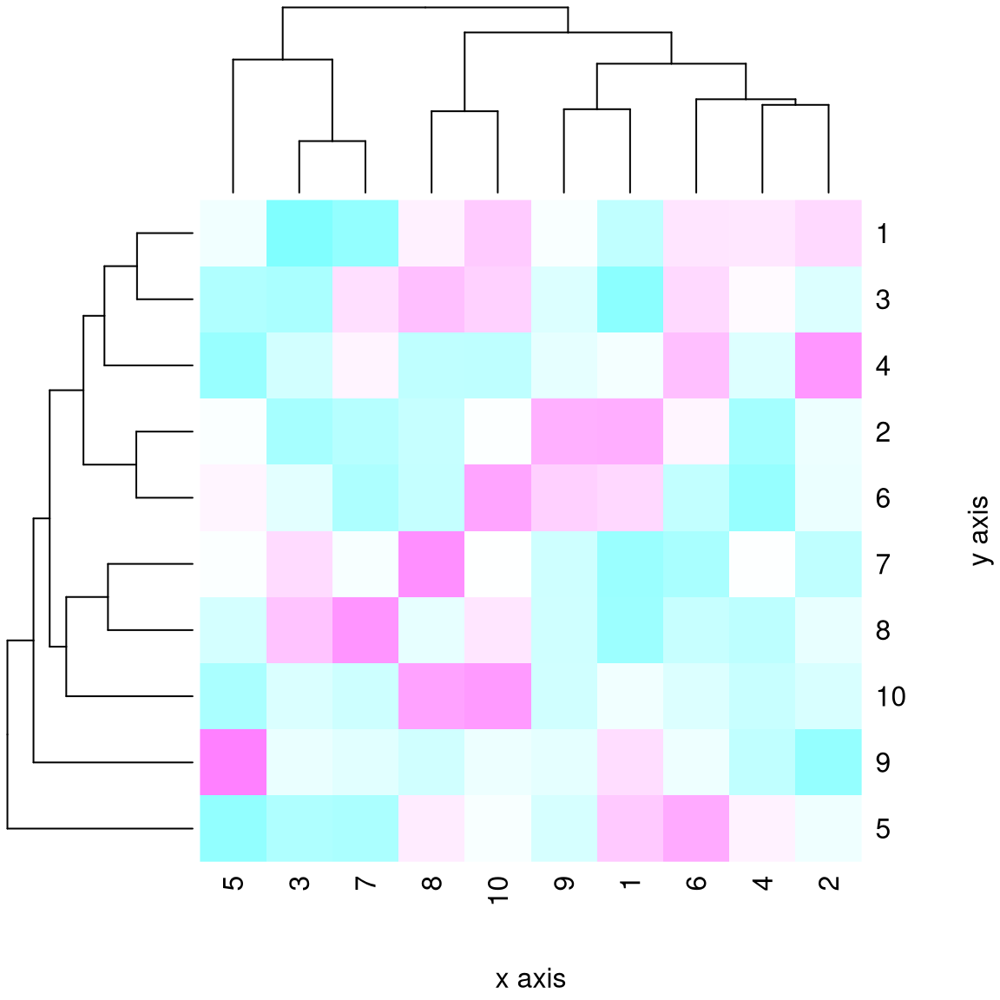

Lecture 4 — Software Engineering for Data Science
Data & Code Management: From Collection to Application
2025-11-06
R packages — Structure, workflow, best practices
Why make an R package?
- Distribute code to others — packaging nudges you to write documentation.
- Enforces conventions (files, names, processes).
- Increases stability via long-term maintenance + testing.
- Improves usability as your function zoo grows.
- Clear API, versioning, and easier onboarding for collaborators.
Setup
You will need (at least) the following packages:
Check your system toolchain:
If not ready: https://r-pkgs.org/setup.html
Demo
(We’ll live-code a tiny package: init → a function → docs → tests → pkgdown.)
Package anatomy
pkgtest/
├─ DESCRIPTION
├─ NAMESPACE # auto-generated by roxygen2
├─ R/ # your exported/internal functions
├─ man/ # *.Rd docs (generated)
├─ tests/testthat/ # unit tests
├─ vignettes/ # long-form docs (optional)
├─ data/ # .rda datasets (optional)
├─ inst/ # e.g., inst/examples/
└─ data-raw/ # raw data + scripts (ignored by build)DESCRIPTION file
DESCRIPTION contains package metadata (authors, description, dependencies, contact, …). Example:
# Plain text (DCF) — shown here for reference
Package: pkgtest
Type: Package
Title: What the Package Does (Title Case)
Version: 0.1.0
Authors@R: person("John", "Doe", email = "john.doe@example.com",
role = c("aut", "cre"))
Maintainer: John Doe <john.doe@example.com>
Description: More about what it does (maybe more than one line).
Use four spaces when indenting paragraphs within the Description.
License: MIT + file LICENSE
Encoding: UTF-8
LazyData: true
URL: https://github.com/ptds2024/pkgtest
BugReports: https://github.com/ptds2024/pkgtest/issues
Roxygen: list(markdown = TRUE)
RoxygenNote: 7.3.1
Suggests:
knitr,
rmarkdown,
testthat (>= 3.0.0)
Config/testthat/edition: 3Tip: usethis::use_description() can scaffold this for you.
Authors and license
Use person() in Authors@R. Common roles:
"cre"= maintainer (creator)"aut"= author (substantial contributions)"ctb"= contributor (smaller contributions)"cph"= copyright holder (institution/corporate)
Choose a license: https://choosealicense.com/licenses/
Dependencies
DESCRIPTION lists what your package needs.
Guidelines:
Importsforfun()used in codes inR/.Dependsfor base R version requirement.Suggestsfor docs, tests, vignettes.- Note: for selective namespace import, use roxygen tags such as:
@importFrom dplyr mutate select.
Documenting your package
- Docs live in
man/as*.Rd(generated). - We generate them with roxygen2 from inline comments.
- Run
devtools::document()to updateNAMESPACE+man/.
Roxygen basics
Place roxygen just above the function:
Useful tags: @title, @description, @details, @param, @return, @examples, @seealso, @author, @references, @import, @importFrom, @export
Document all user-facing functions; export some of them.
Example: hello() (docs vs. help page)
Import external functions explicitly
Rule: If you call functions from another package, you must import them with roxygen’s @importFrom so NAMESPACE lists them.
It is not sufficient to add pkg::fun() calls in your code.
Otherwise you’ll hit R CMD check NOTES like “no visible global function definition for ‘select’” and users may get runtime errors.
Note: Base R functions (e.g., mean(), lm()) do not need imports.
Do (bare names + explicit imports):
Adding data (binary .rda)
- Place datasets in
data/as.rda. - Use
usethis::use_data()to serialize R objects.
Preserve the origin story (data-raw)
- Keep raw inputs + wrangling scripts under
data-raw/. - Make it reproducible with
usethis::use_data_raw()(auto-adds to.Rbuildignore).
Reference: r-pkgs, “Preserve the origin story of package data”.
Documenting datasets
Two useful tags: @format and @source.
.Rbuildignore
Like .gitignore, but for package builds.
Or maintain manually:
Vignettes
Long-form docs (articles, tutorials) built with R Markdown/Quarto.
Remember to list knitr and rmarkdown under Suggests.
Namespaces (how functions are found)
The namespace controls how R looks up variables: it searches your package namespace, then imports, then base, then the regular search path.
- Generated automatically by roxygen2.
- Use
@exportto expose a function;@importFrom pkg funto bring symbols in.
A toy function to test
In R/reg_coef.R:
#' Compute regression coefficients
#'
#' @param x Design \code{matrix} or vector.
#' @param y Response \code{vector}.
#' @details Uses \link[stats]{lm} then \link[stats]{coef}.
#' @importFrom stats lm coef
#' @seealso \code{\link[stats]{lm}}, \code{\link[stats]{coef}}
#' @example inst/examples/eg_reg_coef.R
#' @export
`%r%` <- function(y, x) {
fit <- lm(y ~ x)
coef(fit)
}“Testing” via examples
- Examples (in roxygen) are shown to users and run under
R CMD check. - For bigger snippets, place files under
inst/examples/and reference them:
inst/examples/eg_reg_coef.R:
What happens on check?

Intentional mistake (to see failure)
If inst/examples/eg_reg_coef.R contains:
You’ll get a failing check:

Testing with testthat
Examples are for users; tests are for you (broader, automated).
“Whenever you are tempted to type something into a print statement or a debugger expression, write it as a test instead.” — Martin Fowler
testthat structure
- Expectation: a single check (
expect_*()). - Test: one or more expectations (
test_that()). - Test file: one or more tests (e.g.,
tests/testthat/test_reg_coef.R).
Example:
Continuous Integration (GitHub Actions)
Run checks on multiple R versions/OS on every push/PR:
More examples: https://github.com/r-lib/actions/tree/master/examples
Keep CI within budget (class org)
- We have only 3000 free Actions minutes/month for the class org.
- Prefer public repos (or self-hosted runners) → no Actions minutes used.
- For private repos, test on your personal repo first; then fork to class org.
- Trigger CI on PRs/manual runs and use
pathsfilters:
Keep CI within budget (class org)
- Skip manually CI with
[skip ci]:
Code coverage (nice enhancement)
Measure what your tests execute:
Aim for high, but don’t chase 100% blindly — test the behavior that matters.
pkgdown (package website)

Quickly create a website from your docs/vignettes:
Example site preview
Release checklist (SemVer)
- Update
NEWS.md(usethis::use_news_md()). - Bump version in
DESCRIPTION(e.g.,0.1.0→0.2.0for features). devtools::check()clean locally (no ERROR/WARNING/NOTE).- All CI green; coverage reasonable.
- Rebuild site; tag the release; write a short changelog.
- Consider CRAN policies if submitting (e.g.,
R CMD check --as-cran).
Install from GitHub (user)
For users (install the released tag):
Note: Building from source may require Rtools (Windows) or Xcode CLT (macOS).
Typical workflow (big picture)
usethis::create_package("pkgtest")- Write a function in
R/ - Add roxygen docs →
devtools::document() - Add tests →
usethis::use_testthat()→ writetests/testthat/ - Check →
devtools::check() - CI →
usethis::use_github_action_check_standard() - Site →
usethis::use_pkgdown()→pkgdown::build_site() - Release checklist and version bump (SemVer)
Tips & helpers (usethis)
Resources
- Code shown here: https://github.com/ptds2024/pkgtest
- R Packages (2e): https://r-pkgs.org/
- Writing R Extensions: https://cran.r-project.org/doc/manuals/r-release/R-exts.html
- Book chapter: An Introduction to Statistical Programming Methods with R — Packages section: https://smac-group.github.io/ds/section-r-packages.html
Creating a Python Library
Why a Python library (R parallels)
- Distribute code, enforce conventions, improve stability.
- R:
DESCRIPTION,NAMESPACE, roxygen, testthat, pkgdown
- Py:
setup.py/wheel,__init__.py, docstrings, pytest, MkDocs
Set up a virtual environment (VS Code)
- VS Code → “Python: Select Interpreter” → pick
./venv
Minimal structure (parallel to R package anatomy)
pypkg/ # ← package root (like R pkg root)
├─ setup.py # ← like DESCRIPTION (+ build recipe)
├─ MANIFEST.in # ← include data files (like .Rbuildignore inverse)
├─ README.md
├─ pypkg/ # ← source (like R/ folder)
│ ├─ __init__.py # ← public API (like NAMESPACE role)
│ ├─ hello.py # ← hello()
│ ├─ regression.py # ← reg_coef()
│ ├─ data.py # ← load_snipes()
│ └─ data/
│ └─ snipes.csv # ← packaged dataset
├─ examples/
│ └─ eg_reg_coef.py # ← like inst/examples/...
├─ tests/ # ← pytest (like tests/testthat)
│ ├─ test_hello.py
│ ├─ test_regression.py
│ └─ test_data.py
We need to create these files step-by-step.
Create your project directory (Terminal basics)
Open your terminal (VS Code: View → Terminal) and create a folder for your Python library.
hello() (R: the “Hello, world!” slide)
pypkg/hello.py
pypkg/__init__.py — expose the public API (like exporting in NAMESPACE)
Build a wheel (R: R CMD build)
setup.py (simple & minimal)
Build:
Install & try:
Dataset: snipes (R: data/snipes.rda + data-raw)
Ship the CSV and provide a loader (no pandas required).
pypkg/data.py
from importlib import resources
import csv, io
from typing import List, Dict
def load_snipes() -> List[Dict[str, str]]:
"""Load the bundled 'snipes' dataset (list of dict rows)."""
with resources.files("pypkg.data").joinpath("snipes.csv").open("rb") as fh:
text = io.TextIOWrapper(fh, encoding="utf-8")
return list(csv.DictReader(text))MANIFEST.in — include data in the wheel
R parallel:
use_data()writesdata/*.rda; here we ship a CSV + loader.
Preserve the origin story (R: data-raw/)
Keep raw files & scripts outside the wheel (tracked in Git):
R parallel:
usethis::use_data_raw()+.Rbuildignore; Py: keepdata_raw/out ofMANIFEST.in.
Documenting dataset (R: @format, @source)
Use the loader’s docstring:
MkDocs (later) will render this automatically.
Regression coefficients (R: %r% with stats::lm)
Implement a tiny OLS with NumPy (no heavy deps).
pypkg/regression.py
from typing import Iterable, Tuple
import numpy as np
def reg_coef(y: Iterable[float], x: Iterable[float]) -> Tuple[float, float]:
"""
Compute OLS coefficients for y ~ 1 + x.
Returns
-------
(intercept, slope)
"""
y = np.asarray(y, dtype=float).reshape(-1, 1)
x = np.asarray(x, dtype=float).reshape(-1, 1)
if y.shape[0] != x.shape[0]:
raise ValueError("x and y must have the same length")
X = np.c_[np.ones_like(x), x]
beta, *_ = np.linalg.lstsq(X, y, rcond=None)
b0, b1 = beta.ravel().tolist()
return b0, b1R parallel: returns
coef(lm(y ~ x)).
Example script (R: inst/examples/eg_reg_coef.R)
examples/eg_reg_coef.py
Run:
Update public API (R: NAMESPACE)
pypkg/__init__.py — expose the public API (like exporting in NAMESPACE)
Re-Build a wheel (R: R CMD build)
setup.py (simple & minimal)
from setuptools import setup, find_packages
setup(
name="pypkg",
version="0.1.0",
description="Tiny demo library",
author="Your Name",
packages=find_packages(include=["pypkg", "pypkg.*"]),
install_requires=["numpy>=1.26"],
include_package_data=True, # needed with MANIFEST.in
python_requires=">=3.9",
)Build:
Install & try:
Tests (R: testthat)
Install pytest (already done) and add three tests.
tests/test_hello.py
tests/test_regression.py
Run:
“Explicit imports” (R: @importFrom rule)
- In R, bare names require
@importFrom pkg fun. - In Python, prefer explicit imports at the top:
Clear imports → fewer undefined symbols, better tests & CI.
CI (GitHub Actions) — lite & budget-friendly
.github/workflows/python-ci.yml
name: Python CI (lite)
on:
pull_request:
paths:
- "pypkg/**"
- "tests/**"
- "setup.py"
- "MANIFEST.in"
- ".github/workflows/**"
workflow_dispatch:
concurrency:
group: ${{ github.workflow }}-${{ github.ref }}
cancel-in-progress: true
jobs:
test:
if: "!contains(github.event.head_commit.message, '[skip ci]')"
runs-on: ubuntu-latest
steps:
- uses: actions/checkout@v4
- uses: actions/setup-python@v5
with: { python-version: "3.11", cache: "pip" }
- run: python -m pip install -U pip
- run: pip install -e . pytest
- run: pytest -qDocs (R: pkgdown) — optional but nice
1) Install: Add MkDocs later to auto-render docstrings:
2) Configure
Docs
3) Write docs
Create docs/index.md (overview/quickstart) and docs/api.md for the API.
docs/index.md (example)
docs/api.md (auto API from docstrings)
4) Preview & build
Release & SemVer (same rule as R slides)
0.1.0→ new features: MINOR; bugfix: PATCH; breaking: MAJOR.- Tag:
git tag v0.1.0 && git push --tags - Build wheel, test in a fresh venv, then (optionally) TestPyPI → PyPI with
twine.
Install from GitHub
For users (install from GitHub):
Quick recap (R ↔︎ Py)
- hello() → printed message ⟷ returns/prints in Python.
- snipes dataset →
load_snipes()with packaged CSV. - regression coefficients →
reg_coef()via NumPy OLS. - examples →
examples/eg_reg_coef.py(likeinst/examples). - tests →
pytest(liketestthat). - CI → Actions (lite).
- docs/release → optional MkDocs, SemVer tags + wheel upload.
When should you create a library?
- Rule of Three: you’ve copied the same functions across ≥ 3 projects.
- Audience > you: teammates/students need to reuse your code.
- Stable core idea: function names/arguments won’t change every week.
- Testing matters: you’re willing to add automated tests (testthat/pytest).
- Versioning matters: you want SemVer to communicate changes.
- Docs exist: you can write a README and minimal usage examples (vignette/doc page).
- Multiple environments: others will run it on different machines/OS.
When not (yet)
- One-off notebook/report: no planned reuse.
- Spike/prototype: API and data shapes still change daily.
- Entangled secrets/paths: credentials or local file paths mixed with logic.
- Huge assets: gigabytes of data/binaries—ship loaders, not raw assets.
- No maintainer bandwidth: can’t commit to fixes/docs/release bumps.
Heuristic: if you’d hesitate to fix a bug reported by someone else, don’t package yet.
Object-Oriented Programming
Why OOP?
- Tame complexity. Large codebases drift into “spaghetti code” when everything touches everything. OOP groups data + behavior into cohesive modules (classes) with clear interfaces.
- Reuse & extension. Add new features by creating new classes or methods—without rewriting callers (polymorphism).
- Safer changes. Internals can evolve behind the interface (encapsulation), reducing ripple effects and regressions.
Note
Context: The “spaghetti code” idea is often cited in post-mortems of complex systems (e.g., discussions around large automotive software stacks). Clear module boundaries and interfaces are a first line of defense, (see Toyota 2013 case study)

Part I — R Functions & S3 OOP
Function

“Everything is a function call”
- A function has three components: arguments, a body, and an environment.
- Signalling conditions: errors (severe), warnings (mild), messages (informative).
- Lexical scoping: dynamic lookup & name masking.
- Environments: current, global, empty, execution, package.
- Composition via nesting or piping (
|>).
Signalling conditions
Lexical scoping
S3 OOP system
- Object-oriented programming (OOP) is a popular programming paradigm.
- The type of an object is a class and a function implemented for a specific class is a method.
- Polymorphism: function interface is separated from its implementation; behavior depends on class.
- Encapsulation: object interface is separated from its internal structure; users don’t need to worry about details. Encapsulation helps avoid spaghetti code.
Rhas several OOP systems: S3, S4, R6, …- S3 is the first R OOP system; it is informal (easy to modify) and widespread.
Minimal S3 example
# Minimal S3 example: generic + methods
area <- function(x, ...) UseMethod("area") # generic
# constructor for a 'circle'
new_circle <- function(radius) structure(list(radius = radius), class = "circle")
area.circle <- function(x, ...) pi * x$radius^2
# constructor for a 'rectangle'
new_rectangle <- function(w, h) structure(list(w = w, h = h), class = "rectangle")
area.rectangle <- function(x, ...) x$w * x$h
c1 <- new_circle(2)
r1 <- new_rectangle(3, 4)
area(c1); area(r1)Why OOP?

- Uniform interfaces: one verb (e.g.,
summary(),plot()) works across many data types. - Separation of concerns: analyses call verbs; classes handle how.
- Extensibility: you can add behavior for new data types without touching old code.
- Safer refactoring: callers don’t change; class-specific methods evolve independently.
- Discoverability: “What happens if I call
summary()on this object?” → predictable, documented.
In R, this is powered by S3: a lightweight dispatch system that maps a generic (like
summary) to a method (likesummary.lm) based on the object’s class.
S3 OOP — Motivation
- Polymorphism: same function name, different behavior by object class.
- Lightweight encapsulation: use interfaces, not internals.
- Informal & flexible (no strict class declarations).

Polymorphism example
Min. 1st Qu. Median Mean 3rd Qu. Max.
4.0 12.0 15.0 15.4 19.0 25.0
Call:
lm(formula = cars$speed ~ cars$dist)
Residuals:
Min 1Q Median 3Q Max
-7.5293 -2.1550 0.3615 2.4377 6.4179
Coefficients:
Estimate Std. Error t value Pr(>|t|)
(Intercept) 8.28391 0.87438 9.474 1.44e-12 ***
cars$dist 0.16557 0.01749 9.464 1.49e-12 ***
---
Signif. codes: 0 '***' 0.001 '**' 0.01 '*' 0.05 '.' 0.1 ' ' 1
Residual standard error: 3.156 on 48 degrees of freedom
Multiple R-squared: 0.6511, Adjusted R-squared: 0.6438
F-statistic: 89.57 on 1 and 48 DF, p-value: 1.49e-12What is happening? (dispatch)
summary.double
summary.numeric
=> summary.default=> summary.lm
* summary.default[1] "numeric"[1] "lm"*method exists;=>method selected.
Peeking at generics (R)
function (object, ...)
UseMethod("summary")
<bytecode: 0x5568d595b0c8>
<environment: namespace:base>
1 function (object, ..., digits, quantile.type = 7)
2 {
3 if (is.factor(object))
4 return(summary.factor(object, ...))
5 else if (is.matrix(object)) {
6 if (missing(digits))
1 function (object, correlation = FALSE, symbolic.cor = FALSE,
2 ...)
3 {
4 z <- object
5 p <- z$rank
6 rdf <- z$df.residual ... — forwarding extra arguments
- Useful for generics and passing options forward.
Write a generic + methods (R, S3)
Check the dispatch & implicit class
Inheritance (multiple classes)
If a method isn’t found for the 1st class, R tries the next, and so on.
Create your own S3 class (quick way)
Create your own S3 class (neater)
Create your own S3 class with a constructor
Caution
How can we make this constructor more robust?
Validators
- More complicated class require more complicated checks for validity.
- Rather than making constructor complicated, we can define a validator function for the checks.
Extending an existing generic (with care)
New plot for class pixel
Forwarding extra options with ...
To go further (R)
- An Introduction to Statistical Programming Methods with R — Functions.
- Advanced R (Hadley Wickham), Ch. 6–8 (functions), 12–16 (OOP: S3, S4, R6).
Part II — Python OOP
Why OOP in Python?

- Class-based OOP: define classes (blueprints) and create instances (houses).
- Encapsulation: group data (attributes) with behavior (methods).
- Inheritance: share and extend behavior (code reuse).
- Polymorphism: same method name, different behaviors across types.
- Generic functions with
@singledispatchprovide an R-S3-like feel when helpful.
Classes & instances
classdefines a new type.__init__is the constructor (like R’snew_*()).selfis the instance being operated on. It’s just a naming convention (not a keyword), but always the first parameter of instance methods.
Encapsulation (group data + behavior)

Inheritance & overriding
Polymorphism (same message, different response)
Generic functions with @singledispatch
from functools import singledispatch
import statistics as stats
@singledispatch
def describe(x):
return f"Generic object of type {type(x).__name__}"
@describe.register(list)
def _(x: list):
return {"len": len(x), "mean": stats.mean(x)}
class LinReg:
def __init__(self, coef, intercept): self.coef, self.intercept = coef, intercept
@describe.register(LinReg)
def _(m: LinReg):
return {"coef": m.coef, "intercept": m.intercept}
describe([1,2,3]), describe(LinReg([0.5], 2.0))Note
Rule of thumb in Python:
Use class methods when you control the class design.
Use
@singledispatchwhen you want an external, pluggable generic (like S3) that different modules can extend without modifying the original class.
Composition & duck typing
- Interfaces by behavior: “if it quacks like a duck…”
- Prefer composition when inheritance isn’t needed.
savedoesn’t care what the writer is—only that it has.write().
- You can plug in a new writer (CSV, YAML, DB, HTTP…) without touching save.
Pass in behavior (composition), don’t inherit it, when all you need is a capability.
A tiny “generic plot” (analogy to R’s plot())
import numpy as np, matplotlib.pyplot as plt
from functools import singledispatch
class Pixel:
def __init__(self, data): self.data = np.array(data)
@singledispatch
def plot(obj):
raise TypeError(f"Don't know how to plot {type(obj).__name__}")
@plot.register
def _(obj: Pixel):
plt.imshow(obj.data); plt.title("Pixel"); plt.show()
rng = np.random.default_rng(123)
image = rng.gamma(shape=2.0, scale=1.0, size=(10,10))
px = Pixel(image)
plot(px)To go further (Python)
- Python tutorial on classes (docs.python.org)
functools.singledispatchfor generic functionsinspectfor introspection,abcfor abstract base classes
Bridges — R S3 ↔︎ Python OOP

Generic function
- R:
summary(x)→summary.<class>via S3 dispatch. - Python:
@singledispatchpicks implementation by type.
- R:
Class identity
- R S3:
class(x)is an attribute; can be a vector (ordered inheritance). - Python:
type(x)is the class; inheritance via MRO chain.
- R S3:
Extensibility
- R: add
generic.class <- function(x, ...) {}for known generics (mind...). - Python:
@generic.register(Type)or subclass and override methods.
- R: add
Scoping / environments vs namespaces
- R: function environments, lexical scoping.
- Python: LEGB (Local–Enclosing–Global–Builtins).
Varargs
- R:
...↔︎ Python:*args, **kwargs.
- R:
Recap
- OOP gives you uniform verbs, decoupled implementations, and extensibility.
- In R, S3 makes this lightweight and idiomatic (
summary,plot,coef, …). - In Python, classes +
@singledispatchcover both class methods and generic functions.
Case study (R, S3): a tiny smoother model
Goal: Create a simple “model” object that computes a moving-average fit and immediately works with summary() and plot() via S3.
# Tiny moving average helper (base R)
movavg <- function(z, k = 5) {
stopifnot(k %% 2 == 1, k >= 3)
n <- length(z); out <- rep(NA_real_, n); h <- k %/% 2
for (i in (1 + h):(n - h)) out[i] <- mean(z[(i - h):(i + h)])
out
}
# Constructor returning an S3 object of class "my_smooth"
my_smooth <- function(x, y, k = 5) {
stopifnot(length(x) == length(y))
o <- order(x); x <- x[o]; y <- y[o]
structure(
list(x = x, y = y, k = k, fitted = movavg(y, k), call = match.call()),
class = "my_smooth"
)
}Case study (R, S3): methods + usage
# Summary method
summary.my_smooth <- function(object, ...) {
res <- object$y - object$fitted
c(n = length(object$y),
k = object$k,
mse = mean(res^2, na.rm = TRUE))
}
# Plot method
plot.my_smooth <- function(x, ..., col_points = "grey40", pch = 19) {
plot(x$x, x$y, col = col_points, pch = pch,
xlab = "x", ylab = "y", main = "my_smooth fit", ...)
lines(x$x, x$fitted, lwd = 2)
legend("topleft", bty = "n", legend = paste0("k = ", x$k))
}
# Fit on 'cars' and use generic verbs
m <- my_smooth(cars$dist, cars$speed, k = 5)
summary(m)Case study (R, S3): what dispatch did
Takeaways
- We created a new class (
"my_smooth") with a tiny constructor. - By adding
summary.my_smoothandplot.my_smooth, existing verbs just work. - Analyses call generic verbs; class authors decide the behavior.
Case study (Python): the same idea with classes + @singledispatch
Goal: Mirror the R idea: a small smoother class, plus generic summarize() and plot() that dispatch on type.
import numpy as np
class Smooth:
def __init__(self, x, y, k=5):
assert k % 2 == 1 and k >= 3
idx = np.argsort(x)
self.x = np.array(x)[idx]
self.y = np.array(y)[idx]
self.k = k
self.fitted = self._movavg(self.y, k)
def _movavg(self, z, k):
n = len(z); out = np.full(n, np.nan); h = k // 2
for i in range(h, n - h):
out[i] = np.mean(z[i - h:i + h + 1])
return outCase study (Python): generic functions + usage
from functools import singledispatch
import numpy as np, matplotlib.pyplot as plt
@singledispatch
def summarize(obj):
raise TypeError(f"No summarize() for {type(obj).__name__}")
@summarize.register
def _(obj: Smooth):
res = obj.y - obj.fitted
return {"n": len(obj.y), "k": obj.k, "mse": float(np.nanmean(res**2))}
@singledispatch
def plot(obj):
raise TypeError(f"No plot() for {type(obj).__name__}")
@plot.register
def _(obj: Smooth):
plt.scatter(obj.x, obj.y, s=15)
plt.plot(obj.x, obj.fitted, linewidth=2)
plt.title(f"Smooth (k={obj.k})")
plt.xlabel("x"); plt.ylabel("y"); plt.show()
# Example with 'cars'-like data (replace with real arrays in class)
dist = [d for d in range(2, 122, 2)]
rng = np.random.default_rng(123)
speed = (0.3*np.array(dist) + rng.normal(0, 3, len(dist))).tolist()
m = Smooth(dist, speed, k=5)
summarize(m), plot(m)Case study
Same verb, different types
- R:
summary(m)→ findssummary.my_smooth. - Python:
summarize(m)→@singledispatchpicks theSmoothimplementation.
- R:
Extensibility
Add another class (e.g.,
my_tree) and define just two methods:- R:
summary.my_tree(),plot.my_tree() - Python:
@summarize.register(MyTree),@plot.register(MyTree)
- R:
Separation of concerns
- Analysts keep calling the same verbs; class authors evolve internals safely.
OOP Exercise in R
Setup (given): you have my_smooth(x, y, k) (constructor) with
summary.my_smooth() and plot.my_smooth() from the case study.
A. Create and use an object 1) Build three models with different windows: k = 3, k = 7, k = 11.
2) Call summary() on each.
3) In 1–2 lines: which k fits best (lower MSE) on your data?
B. Add a tiny exporter Add an S3 method to convert your object to a simple list:
Then run: d <- as.list(m7); names(d) Why is exporting to a plain list handy (think: saving, APIs, tests)?
OOP Exercise in R (continued)
C. Make a simple prediction Add a predict() S3 method using linear interpolation along the fitted curve:
Try: predict(m7, c(10, 20, 30)) and print the results.
D. Plot (optional) Plot your three models and briefly describe how increasing k changes smoothness:
OOP Exercise in Python
Setup (given): you have Smooth(x, y, k=5) from the case study, plus:
A. Create and use an object
- Make a
Smoothwithk = 3,k = 7,k = 11. - Call
summarize()on each. - In 1–2 lines: which
kfits best (lower MSE) on your data?
B. Add a tiny method Add this method inside Smooth:
Then do: d = m.to_dict() and print the keys. Why is this useful?
OOP Exercise in Python (continued)
C. Make a simple prediction Add inside Smooth:
Try predict([10, 20, 30]) and print the results.
D. Plot (optional) Make a function:
Plot your three models; in 1–2 lines, say how increasing k changes smoothness.
Functional Programming
Functional programming
A paradigm emphasizing pure functions (no side effects), immutability, and declarative style.
Benefits: maintainable, predictable, and scalable (parallelizable) code.
Key concepts:
- Pure function: same output for same input; no side effects.
- First-class functions: can be passed, returned, stored.
- Higher-order functions: take/return functions.
Pure function
- A pure function always produces the same output for the same input.
- Is
rnorma pure function?
Pure function (continued)
- Same explicit call but different internal RNG state →
rnormis not pure.
First-class functions — pass as argument
First-class functions — returning a function
- See Function factories.
Function operators / higher-order
- See Function operators.
From for loops to functionals — squares (R)
From for loops to functionals — sum
purrr::map() (R)

Returning atomic vectors
map/lapplyreturn alist; sometimes you want an atomic vector.- Use
map_lgl(),map_int(),map_dbl(),map_chr()or basesapply/vapply.
Inline anonymous functions
There are situations where the function you want to pass does not exist yet. Use an inline anonymous function (aka lambda).
Variants to purrr::map()

pmap generalization (R)

Variants to sapply (R)
mapplygeneralizessapplyto many inputs.Mapvectorizes over all arguments (no extra non-vectorized input allowed).
outer product (R)
Common higher-order functions in FP (R)
- Higher-order = take/return functions.
Reduceapplies a binary function iteratively to elements of a vector.

R’s vectorization
Vectorizing a function (R): pitfall then fix
Vectorizing a function (R): Vectorize
Vectorizing a function (R): ifelse
Parallelism (R)
- Benefits of FP include scalability and parallelism.
- Many problems are embarrassingly parallel.
parallelships with R and offers parallelized*applyvariants.
- This is the total number of threads (Hyper-Threading), not physical cores.
Forking with mclapply (R)
Forking with mclapply (R)
Socket cluster with parLapply (R)
Socket cluster with parLapply (R)
Python counterparts
- Python is multi-paradigm. It supports functional programming (FP) alongside OOP and imperative styles.
- Functional tools:
map/filter, comprehensions,itertools,functools.reduce/partial/lru_cache. - Vectorization is via NumPy (ufuncs). Parallelism via
concurrent.futures/multiprocessing. - Defaults are eager at definition time (vs. R’s lazy promises); use the
Nonepattern for dynamic defaults.
To go further
- R: Advanced R — Functionals, Function factories, Function operators.
- R:
purrrcheatsheet. - R: Loop Functions & Parallel Computation in R Programming for Data Science.

HEC Lausanne · Business Analytics · Thu 9:00–12:00